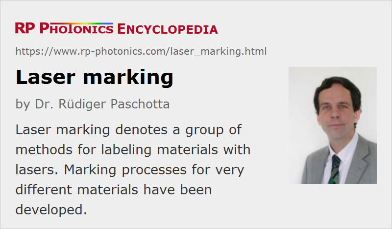

Laser Marking
Definition: a group of methods for labeling materials with lasers
More general term: laser material processing
German: Laser-Markieren, Laser-Beschriften
How to cite the article; suggest additional literature
Author: Dr. Rüdiger Paschotta
Laser marking is a method for labeling various kinds of objects using a laser. The principle of laser marking is that a laser beam somehow modifies the optical appearance of a surface that it hits. This can occur through a variety of mechanisms:
- ablation of material (laser engraving); sometimes removing some colored surface layer
- melting a metal, thus modifying the surface structure
- slight burning (carbonization) e.g. of paper, cardboard, wood, or polymers
- transformation (e.g. bleaching) of pigments (industrial laser additives) in a plastic material
- expansion of a polymer, if e.g. some additive is evaporated
- generation of surface structures such as small bubbles
By scanning the laser beam (e.g. with two movable mirrors), it is possible to quickly write letters, symbols, bar codes, and other graphics, using a vector scan or a raster scan. Another method is to use a mask which is imaged on the workpiece (projection marking, mask marking). This method is simple and faster (applicable even with moving workpieces) but less flexible than scanning.
Laser marking has a huge variety of applications:
- adding part numbers, “use by” dates and the like on food packages, bottles, etc.
- adding traceable information for quality control
- marking printed circuit boards (PCBs), electronic components, and cables
- printing logos, bar codes and other information on products
Compared with other marking technologies such as ink jet printing and mechanical marking, laser marking has a number of advantages, such as very high processing speeds, low operation cost (no use of consumables), constant high quality and durability of the results, avoiding contaminations, the ability to write very small features, and very high flexibility in automation.
Plastic materials, wood, cardboard, paper, leather and acrylic are often marked with relatively low-power CO2 lasers. For metallic surfaces, these lasers are less suitable due to the small absorption at their long wavelengths (around 10 μm); laser wavelengths e.g. in the 1-μm region, as can be obtained e.g. with lamp- or diode-pumped Nd:YAG lasers (typically Q-switched) or with fiber lasers, are more appropriate. Typical laser powers used for marking are of the order of 10 to 100 W. Shorter wavelengths such as 532 nm, such as obtained by frequency doubling of YAG lasers, can be advantageous, but such sources are not always economically competitive. For marking of metals like gold, which has too low absorption in the 1-μm spectral region, short laser wavelengths are essential.
Demands on Lasers for Marking
Lasers for marking applications must meet a number of demands. Some typical ones are:
- A certain optical peak intensity or fluence must be reached on the workpiece. (Marking processes often exhibit a certain threshold, below which no satisfactory result can be achieved, even with multiple pulses.) This requires some suitable combination of peak power or pulse energy and beam radius at the focus, and the pulse duration also has some influence. Tight focusing is also required for the sake of high resolution, and together with a reasonable working distance this means that high beam quality is needed.
- For fast processing, the laser needs to offer a high enough pulse repetition rate, which together with the pulse energy means a certain average power. (In certain regimes, the repetition rate of a Q-switched laser is limited by the possible average power, in other regimes by the laser dynamics or the achievable pulse duration.)
- In some cases, the Q-switched pulse train must be switched off for certain time intervals. The often introduces the problem that the first pulse has a higher energy, which can spoil the marking quality.
- The laser setup should be compact and should not require complicated cooling arrangements. Air cooling is preferable and often possible.
- The cost of ownership must be moderate – not only in terms of installation cost, but also concerning lifetime and maintenance.
- As industrial environments can be harsh, a robust laser design is essential for reliable operation.
Depending on the specific circumstances, different types of lasers can be most suitable for a marking application. For example, Q-switched vanadate lasers can be superior when high pulse repetition rates (> 100 kHz) are important. Fiber lasers, which are in that case actually master oscillator power amplifier (MOPA) systems, are very flexible in terms of pulse repetition rates and interruption of pulse trains, but often emit longer pulses with lower pulse energies and peak power. CO2 lasers can be superior in cases where their long wavelength is suitable and a high average power is needed.
Suppliers
The RP Photonics Buyer's Guide contains 51 suppliers for laser marking machinery. Among them:
Questions and Comments from Users
Here you can submit questions and comments. As far as they get accepted by the author, they will appear above this paragraph together with the author’s answer. The author will decide on acceptance based on certain criteria. Essentially, the issue must be of sufficiently broad interest.
Please do not enter personal data here; we would otherwise delete it soon. (See also our privacy declaration.) If you wish to receive personal feedback or consultancy from the author, please contact him e.g. via e-mail.
By submitting the information, you give your consent to the potential publication of your inputs on our website according to our rules. (If you later retract your consent, we will delete those inputs.) As your inputs are first reviewed by the author, they may be published with some delay.
See also: lasers, lamp-pumped lasers, fiber lasers, laser applications
and other articles in the category methods
|  |
If you like this page, please share the link with your friends and colleagues, e.g. via social media:
These sharing buttons are implemented in a privacy-friendly way!